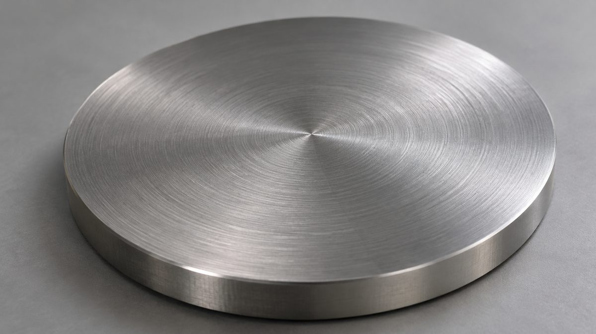

이엠에스, 정전척용 합금 타깃 검증

인쇄회로기판(PCB)에 작은 구멍을 뚫는 마이크로드릴과 반도체용 정전척 히터는 이엠에스(EMS)가 소재·코팅 기술을 적용하는 두 분야다. 드릴에서는 마모를 억제해 사용 시간을 늘리는 것이, 반도체 부품에서는 고객 공정에 맞는 성능을 안정적으로 구현하는 것이 과제다. 지난 11월 27일 보도에 따르면 정전척 히터용 합금 타깃과 코팅 기술은 국내 관련 업체의 개념검증(PoC)을 거치고 있다.
마이크로드릴 분야에서 회사가 택한 방법은 공구 겉면에 탄소계 막을 입히는 것이다. 가공을 반복할 때 생기는 마찰과 마모를 줄이기 위한 방식이다. 드릴이 닳으면 뚫린 구멍의 모양이나 가공 품질도 달라질 수 있다. 동일한 조건에서 코팅을 입힌 공구와 입히지 않은 공구를 시험해 성능 차이를 살필 수 있다는 점이 이 분야로 기술을 확장한 배경이다.
회사가 밝힌 드릴용 코팅의 설계 두께는 2㎛ 이하이며, 경도는 40GPa 이상, 마찰계수는 0.1 이하다. 플라즈마로 표면을 세정한 다음 접착층과 응력 완화층, 기능층을 구성하는 다층 방식을 개발했다. 크기가 작은 정밀공구는 막 두께가 가공 치수에 영향을 줄 수 있다. 얇게 입힌 막도 작업 중 떨어지면 수명 연장 효과가 유지되기 어려워 밀착력까지 함께 검토했다.
코팅 효과에 대해 이엠에스는 자체 비교시험에서 미코팅 드릴 대비 최대 3배의 수명을 확인했다고 밝혔다. 이 수치는 해당 시험의 조건에 한정된다. 사용 기판의 소재, 가공속도와 드릴 규격이 바뀌면 결과도 달라질 수 있다. 고객 생산현장에서 공구를 얼마나 더 오래 쓰는지, 교체에 드는 비용이 어느 정도 줄어드는지는 별도의 평가가 필요하다.
드릴 코팅에 사용하는 자체 장비는 공구 크기에 따라 한 번에 약 500~2000개를 처리한다는 게 회사 설명이다. 하루 기준 최대 처리 규모로는 6000개 수준을 제시했다. 제품 규격과 고객 요청을 반영해 공정 조건 및 작업 일정을 조율하고 있다. 이 수량은 정밀공구에 코팅을 입히는 능력을 나타내며, 정전척 히터용 소재를 양산해 공급했다는 실적과는 구분된다.
반도체 분야에서는 티타늄을 바탕으로 한 고밀도 합금 타깃이 개발 대상이다. 이엠에스는 밀도뿐 아니라 경도와 열적 특성도 검토했으며, 타깃 밀도로 99% 이상을 제시했다. 웨이퍼 고정에 쓰이는 정전척에 히터를 더하면 공정 온도를 유지하는 기능도 맡는다. 고온·플라즈마·부식성 가스에 노출될 수 있는 사용 환경 때문에 코팅이 잘 붙어 있고 오래 견디는지가 중요하다.
타깃은 진공에서 부품에 박막을 입힐 때 사용하는 원료다. 플라즈마에 의해 원료에서 나온 원자들이 부품 겉면에 쌓이며 막을 이룬다. 금속마다 별도 타깃을 쓰는 경우에는 각 원소가 쌓이는 속도와 공정 조건을 조절해야 한다. 이엠에스는 필요한 금속들을 사전에 합금으로 만들어 타깃으로 사용하는 방식으로 코팅 조성을 관리해 왔다.
다만 원료를 합금으로 준비해도 형성된 막의 조성이 저절로 균일해지지는 않는다. 증착할 때 원소별 움직임이 다르고 장비의 설정에도 영향을 받기 때문이다. 회사는 합금 설계와 타깃 제작에 더해 장비 운용과 성능 확인까지 연계하고 있다. 고객 부품의 형태와 쓰임새에 맞춰 박막을 만드는 조건을 조정하기 위해서다.
이러한 사업의 출발점은 이한찬 대표가 한국생산기술연구원에서 쌓은 합금 및 박막 코팅 연구 경험이다. 이 대표는 2022년 10월 회사를 세웠다. 이후 연구조직과 사업 기반을 넓혀 2023년에는 기업부설연구소를 마련했으며, 소재·부품·장비 전문기업으로 확인받은 해는 2024년이다. 자체적으로 플라즈마 코팅 장비도 갖춰 개발한 타깃을 부품에 적용하는 공정까지 다룰 수 있게 했다.
현재 반도체용 기술을 평가하는 고객은 국내 정전척 히터 및 정밀 세라믹 부품 관련 기업이다. 확보한 소재 물성이 고객 공정에서도 유효한지 살피는 단계여서 양산 공급을 위한 검증은 남아 있다. 이 대표는 공정의 안정성과 부품의 사용 수명이 품질 및 생산성에 영향을 미친다고 설명했다. 코팅 물성에 더해 고객 장비에서 결과가 반복되는지와 공정에 미치는 영향을 확인해야 하며, 반도체 양산라인의 장기 운용 성능 및 공급 실적도 추가로 확보할 과제다.